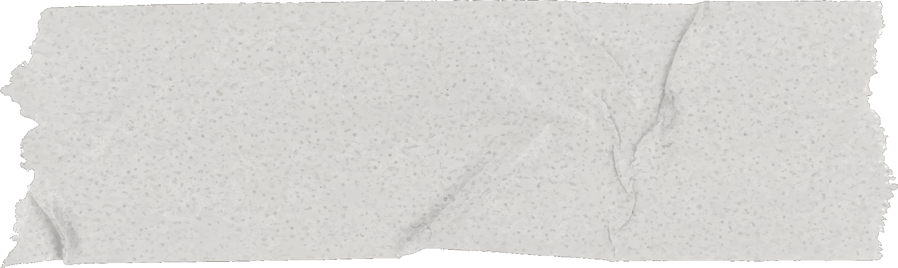
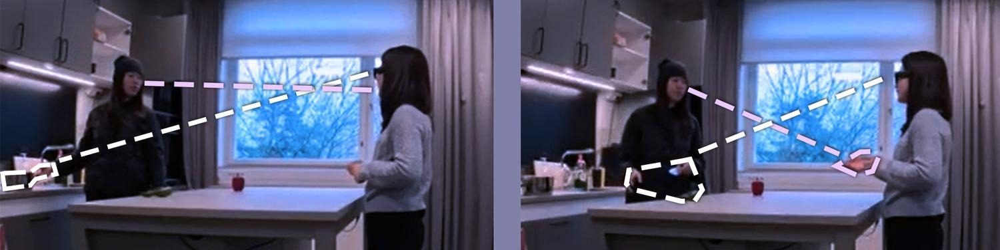
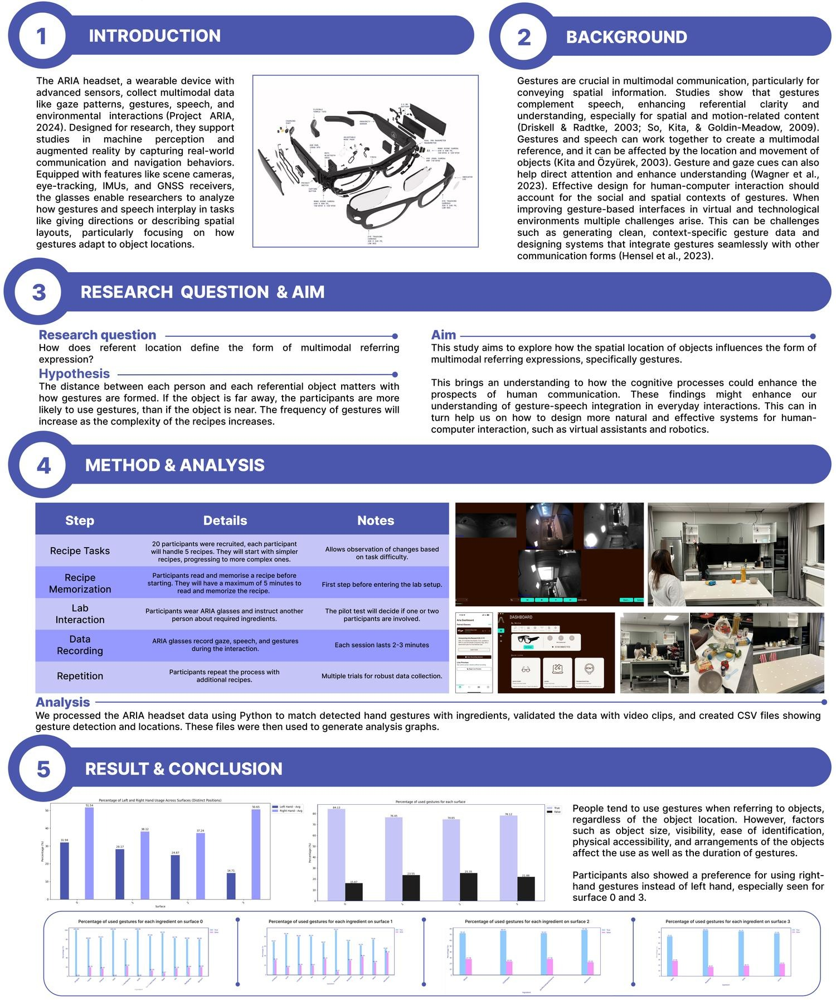
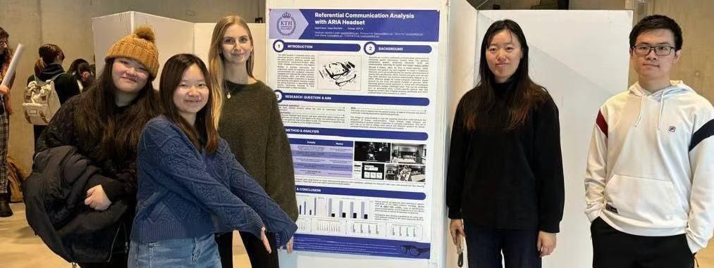

The study
The tasks were done in a kitchen lab and contained a set of recipes with ingredients that the participant would memorize and refer to. The main focus here was the object location and the use of gestures.
Twenty participants each handled five recipes, working from simpler ones to more complex. ARIA recorded gaze, speech and gesture across sessions of two to three minutes, and the data was processed in Python to match detected hand gestures with ingredients.
What we found
Most people use gestures when referring to objects, regardless of the location. Slightly more gestures were used for less visible objects, and participants showed a clear preference for right-hand gestures.
Limitations such as the small sample size, controlled setup, and potential inaccuracies in capturing gesture timing may affect the generalizability of the findings. Future work could involve a broader group of participants and more multimodal languages.

